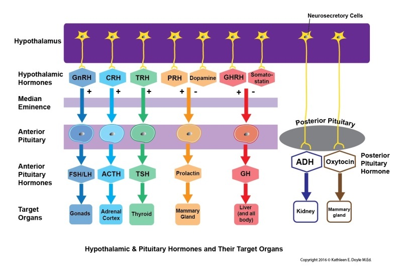
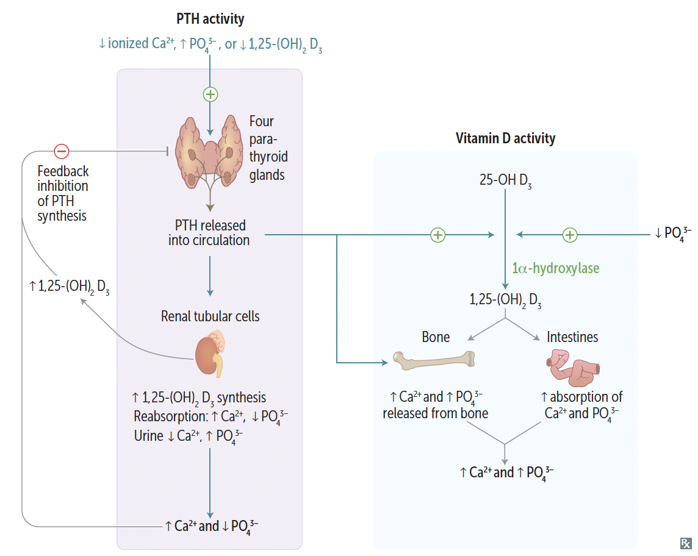
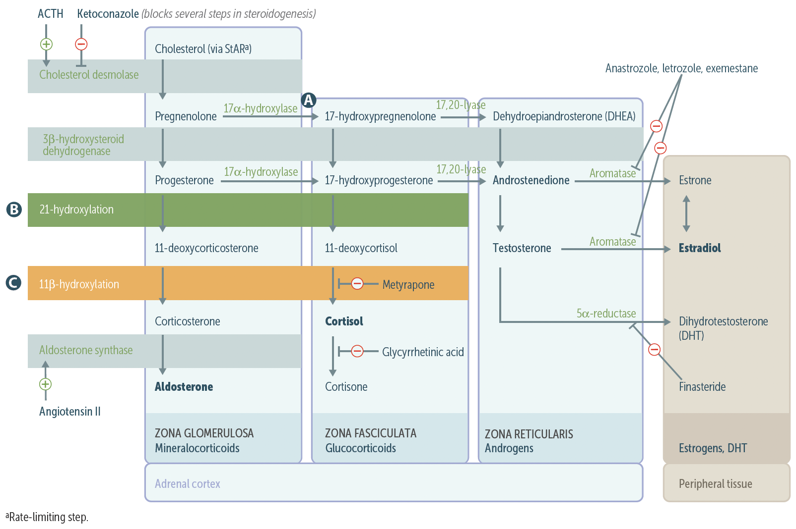
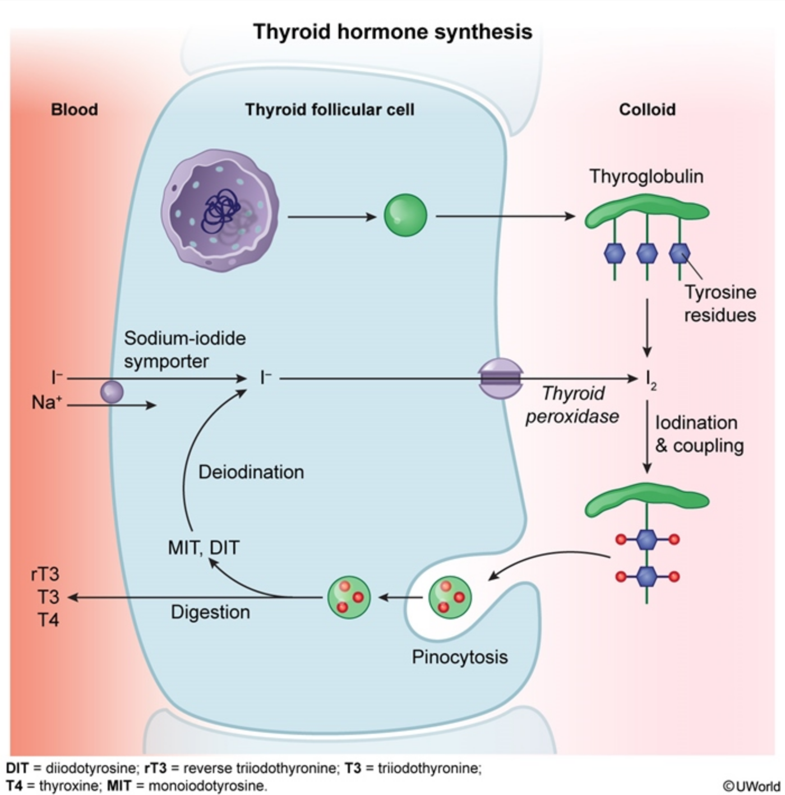

Welcome to the Endocrine system! In the next 2 weeks, you will learn everything about endocrine physiology, embryology, pathology, and pharmacology. Below is a brief overview of Endo and how I would approach this system. Like in most systems, I'll note what is high-yield for UVA🔴 and what's high-yield for Step 1🟡.
|  |  |
| Hypothalamus-pituitary axis | Parathyroid hormone regulation |
| cAMP | FSH, LH, ACTH, TSH, CRH, hCG, ADH (V2), MSH, PTH, calcitonin, histamine (H2), glucagon, GHRH | |
| cGMP | BNP, ANP, EDRF (NO) | |
| IP3 | GnRH, oxytocin, ADH (V1), TRH, histamine (H1), angiotensin Ⅱ, gastrin | |
| Intracellular receptor | Progesterone, estrogen, testosterone, cortisol, aldosterone, T3/T4, Vit D | |
| Receptor tyrosine kinase | IGF-1, FGF, PDGF, EGF, TGF-β insulin | |
| Nonreceptor tyrosine kinase | Prolactin, immmunomodulators, GH, G-CSF, EPO, thrombopoietin |
| Hormone | Source | Function | Regulation | Clinical Notes |
|---|---|---|---|---|
| ADH (vasopressin) | Posterior pituitary | ↑ water permeability of DCT and collecting duct cells in kidney to ↑ water reabsorption | Stimulus: ↑ Angiotensin Ⅱ (ATⅡ); ↑ plasma osmolality (except in SIADH) part of the RAAS |
|
| CRH | Hypothalamus | ↑ ACTH, MSH, β‑endorphin | ↓ in chronic exogenous steroid use | |
| ACTH | Anterior pituitary | Stimulate adrenal production of cortisol | ||
| Cortisol | Adrenal zone fasiculata | ↑ appetite, ↑ BP, ↑ insulin resistance, ↑ gluconeogenesis, lipolysis, protelysis, ↓ fibroblast activity, ↓ immune responses, ↓ bone formation | CRH → ACTH → cortisol release excess cortisol ↓ CRH (negative feedback) |
chronic exogenous steroid use diminishes body's ability to produce cortisol; thus, need to wean off steroid in order to restore homeostasis; also explains why steroid usage causes osteopenia |
| MSH | ↑ melanogensis by melanocytes | Causes hyperpigementation in Cushing disease, as MSH and ACTH share the same precursor molecule, propiomelanocortin (POMC) Also see in 1° adrenal insufficiency, where ACTH is not produced and MSH is produced instead |
||
| Dopamine | Hypothalamus | ↓ prolactin, TSH | aka prolactin-inhibiting factor dopamine antagonists can cause galactorrhea due to hyperprolactinemia |
|
| Prolactin | Anterior pituitary | ↓ GnRH → inhibiting voluation and spermatogenesis Stimulates lactogenesis ↳ excessive amounts of prolactin is associated with ↓ libido |
Tonically inhbited by dpamine Prolactin in turn inhibits its own secretion by ↑ dopamine synthesis and secretion TRH ↑ prolactin secretion |
Stimulated by dopamine antagonists (e.g, most antipsychotics, metoclopramide) and estrogens (OCPs, pregnancy) Inhbited by dopamine agonists (e.g., bromocriptine) |
| GHRH | Hypothalamus | ↑ GH | GH inhibts GHRH release | |
| Growth hormone (somatotropin) | Anterior pituitary | Stimulates linear growth (bone) and muscle mass through IGF-1 (somatomedin C) secretion by liver. ↑ insulin resistance (diabetogenic), ↓ glucose uptake ↑ lipolysis |
Released in pulses in response to GHRH. Secretion ↑ during exercise, deep sleep, puberty, hypoglycemia, CKD. Secretion ↓ by glucose, somatostatin, somatomedin. |
Excess secretion of GH (e.g., pituiary adenoma) may cause acromegaly (adults) or gigantism (kids). Tx: somatostatin analogs (e.g, octreotide) or surgery. |
| Somatostatin | Hypothalamus | ↓ GH, TSH | ||
| GnRH | Hypothalamus | ↑ FSH, LH | Suppressed by hyperprolactinemia Tonic GnRH analog (e.g, leuprolide) suppress hypothalamic-pituitary-gonadal axis. Pulsatile GnRH leads to puberty, fertility |
|
| FSH | Anterior pituitary | In females:
|
||
| LH | Anterior pituitary | In females:
|
||
| Estrogen | Ovary (17β‑estradiol), placenta (estriol), adipose tissue (estrone via aromatization) potency: estradiol (E2) > estrone (E1) > estriol (E3) |
Development of genitalia and breasts (including pigmentation of areolas), female body habitus (narrow shoulders, broad hips, female fat distribution) Growth of follicle, endometrial proliferation, ↑ myometrial excitability. Upregulation of estrogen, LH, and progesterone receptor Negative feedback of FSH and LH, then LH surge Stimulation of prolactin secretion ↑ transport proteins, SHBG: ↑ HDL, ↓ LDL. |
||
| Progesterone | Corpus luteum, placental, adrenal cortex, testes. | During luteal phase, prepares uterus for implantation:
|
||
| Androgens (Testosterone, diahydrotestosterone (DHT), androstenedione) |
Testes (testosterone, DHT), adrenal (androstenedione) potency: DHT > testosterone > androstenedione |
Testosterone:
|
||
| Oxytocin | Produced by hypothalamus; Released by posterior pituitary |
Causes uterine contractions during labor. Responsible for milk letdown relfex in response to suckling. |
Modulates fear, anxiety, social bonding, mood, and depression. | |
| TRH | Hypothalamus | ↑ TSH, prolactin | ↑ TRH (e.g., 1° or 2° hypothyroidism) may lead ↑ prolactin → galactorrhea | |
| TSH | Anterior pituiary | ↑ thyroid synthesis | Stimulated by TRH Inhibited by T3/T4 and somatostatin |
|
| Thyroid hormones (I3‑thyronine (T3) and thyroxine (T4)) | Follicles of thyroids | T3 functions: (7B's)
|
Stimulated by TSH (which is in turn stimulated by TRH) Negative feedback by free T3/T4 Inhibited by thyroxine-binding globulins (TBGs) in the blood ↳ TBG increase in preg, OCP use (via estrogen) ↳ TBG decrease in steroid use, nephrotic syndrome |
Thyroid-stimulating immunoglobulin (TSI) may stimulate follicular cells in Graves dz. |
| Insulin | pancreatic β‑islet cell | Induce glucose uptake (GLUT4) in insulin-dependent tissues (adipose tissue & striated muscles) and gene transcription via tyrosine kianse receptor activity Anabolic effects of insulin:
|
Glucose is the major regulatory of insulin release. Stronger response to oral glucose intake than IV glucose. Opposed by glucagon. |
DM1 - usually autoimmune destruction of β-islet cells → no endogenous production of insulin; over time, also leads to destruction of α cells
|
| Glucagon | pancreatic α‑islet cells | Promote glycogenolysis, gluconeogenesis, lipolysis, ketogenesis. Elevates blood sugar levels to maintain homeostasis | Secreted in response to hypoglycemia Inhbited by insulin, hyperglycemia, somatostatin |
|
| Ghrelin | Stomach | Acts on the lateral area of the hypothalamus (hunger center) to ↑ appetite. Stimulates hunger (orexigenic fx) and GH release (via GH secretagog receptor). |
Induced by fasting, sleep deprivation, or Prader-Willi syndrome | |
| Leptin | Adipose tissues | Acts on ventromedial area of hypothalamus (satiety center) to ↓ appetite | Sleep deprivation or starvation ↓ leptin production |
|
| Endocannabinoids | Acts on cannabinoid recpetors in hypothalmus and nucleus accumbens, two key brain areas for teh homeostatic and hedonic control of food intake: ↑ appetite | Exogenenous cannabinoids cause "the munchies" | ||
| Parathyroid hormone (PTH) | Chief cells of parathyroid | ↑ Ca2+ in blood ↑ Ca2+ and PO43- absorption in the gut ↑ Ca2+ and PO43- from bone resorption ↑ Ca2+ reabsorption in DCT ↓ PO43- reabsorption in PCT ↑ 1,25-(OH)2D3 production by activating 1α-hydroxylase in PCT |
PTH secretion is stimulated by hypocalcemia, hyperphosphotemia, hypomagnesemia PTH secretion is inhibited by significant hypomagnesemia |
|
| Calcitonin | Parafollicular cells of thyroid | ↓ bone resorption of Ca2+ Opposes action of PTH |
Hypercalcemia stimualates calcitonin secretion |
|  |  |
| Synthesis of adrenal hormones & its derivatives | Thyroid hormones synthesis |
|
|
| Insulin synthesis |